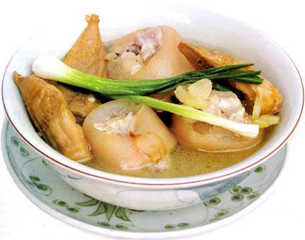

Cùng bắt tay làm thử thôi nào!
– Măng khô xé sợi sẵn, lựa măng còn non, tránh mua măng già sẽ cứng và dai không ăn được.
– Giò heo rút xương (số lượng tùy ý).
– Nửa kí xương ống (dùng để hầm lấy nước ngọt).
– 2 củ cà rốt.
– Bún tươi.
– Hành ngò, hành phi, ớt, chanh, nước mắm, hạt nêm, đường, muối, tiêu.
– Rau sống (rau muống bào, bắp chuối bào, rau răm, rau thơm các loại, giá sống).
- Măng rửa sạch, ngâm nước khoảng 10 phút rồi luộc kĩ với nước sôi cho đến khi măng mềm, vớt ra để ráo nước.
– Giò heo và xương ống rửa sạch, xát muối rồi trụng sơ qua nước sôi cho ra chất dơ.
– Đặt nồi nước lên bếp, hầm chung với xương ống và giò heo trong khoảng 1 tiếng rưỡi. Nếu bạn muốn ăn giò heo mềm thì hầm lâu hơn. Bạn nhớ hớt bọt liên tục để nước lèo được trong.
– Cà rốt bào vỏ, rửa sạch, cắt khúc, cho vào nồi hầm chung với giò heo và xương ống.
– Đến khi giò mềm như ý, cho măng vào, nêm nước mắm + hạt nêm + đường, nêm vừa ăn là được. Chờ nồi nước lèo sôi dạo lại lần nữa thì tắt bếp, rắc hành phi lên trên.
– Cho bún ra tô, chan nước lèo ngập bún, cho thêm giò heo, măng và cà rốt vào, rắc hành ngò cắt nhuyễn và tiêu lên trên, ăn nóng với rau sống và nước mắm ớt rất ngon.